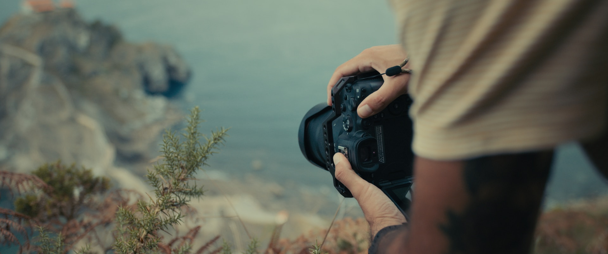
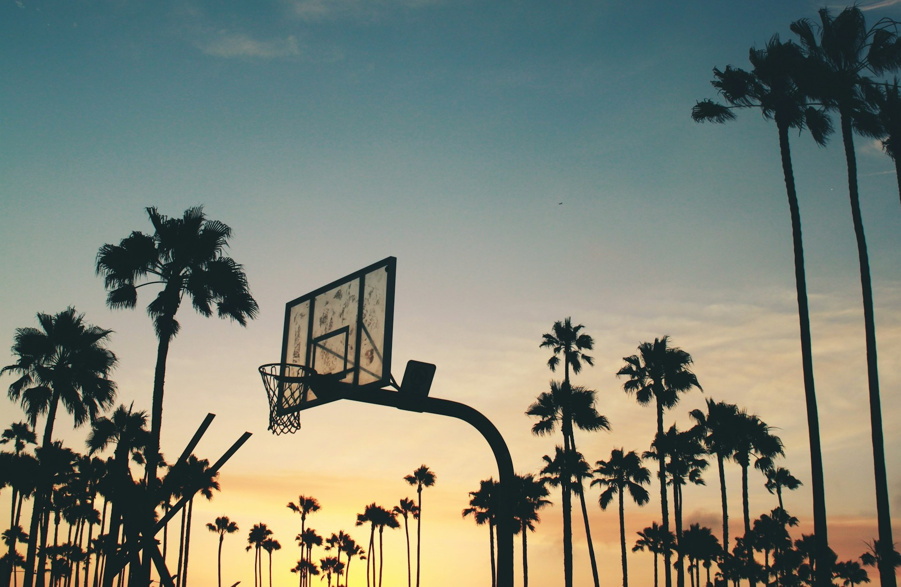

Some stories I've followed
Dar City Basketball
Sport documentary • Bal Journey • 2026
A journey beyond the court.
Zanzibar. South Africa. Dubai. Kigali.
I followed Dar City Basketball through an international journey that was bigger than basketball.
I wanted to capture what happens when the cameras stay long enough to see the story beyond the game.


Highlights
Before The Game
Training. Preparation. Expectation. Hope. Meditation.
On the road
New places. Long journeys. Different environments.
Under pressure
A team is never just the people on the floor. It’s the people around them.
Beyond the court
The moments become heavier when something is at stake.